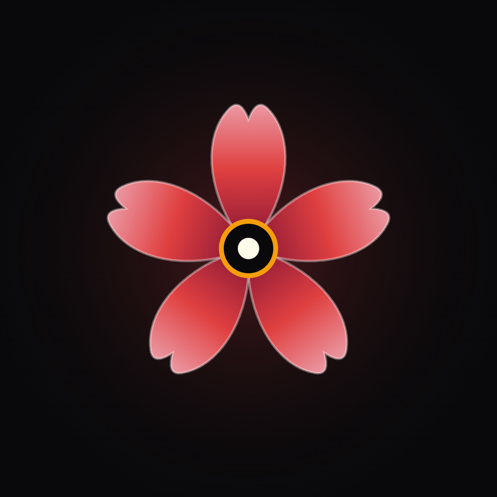

iOS App · K-AURA Studio
K-AURA
Decode Your Korean Birth Chart & Face Aura
K-AURA fuses deterministic Korean Four Pillars (Saju) astronomy with 100% on-device Apple Vision facial geometry — no account required, and zero photos ever leave your iPhone.
Privacy-First Architecture
- Zero Photos Uploaded: All facial landmark geometry runs exclusively inside Apple Vision on your device and is discarded in memory after capture.
- True Solar Time Saju Engine: Computes exact Year, Month, Day, and Hour pillars locally using your birth city's longitude and historical DST.
- Zero Account Needed: Your saved profile and K-Chemistry matches live only on your iPhone and can be wiped anytime in one tap.